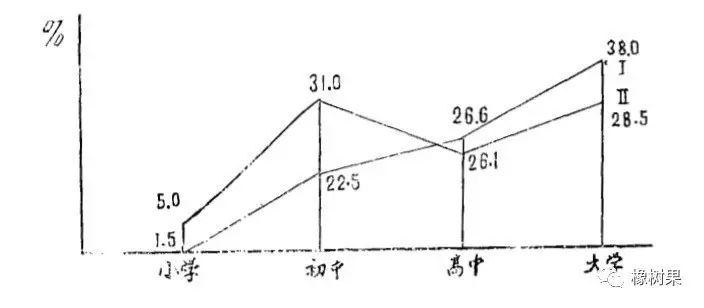

收录于合集

“政治学研究中的定量分析方法” 作者：孙嘉明 发表于 《政治学研究》1986年第6期。CSSCI来源期刊、全国中文核心期刊（2012）
定量研究在自然科学中，早已成为一种不可或缺的认识手段，在社会科学领域，定量分析方法也已取得一些突破性的进展。美国哈佛大学卡尔·多伊奇等研究了本世纪以来社会科学方面的论著，遴选出六十二项重大贡献，并得出结论：定量研究成果占总数三分之二，自一九三0年后，定量成就所占比例更达六分之五，大部分成就往往是数学和统计方法的革新或者是通过定量分析而推导出来的理论。
社会现象与自然现象的显著区别在于，社会现象是随机的，或然的，其中人为因素很大，因此，社会科学中定量研究方法的运用较之自然科学要复杂得多，经典数学几乎无法在社会科学领域立足，而随机数学、模糊数学则有巨大潜力，社会科学中的定量分析，必须在定性研究基础上进行，定量服务于定性 。
在我国，政治学与社会学、心理学等应用性学科一样，既属于老学科，又都属于年轻的学科。与发达国家相比，我们的政治学研究，不仅在理论上，而且在方法上都还停留在类似于政治哲学的思辨研究水平 。因此，要发展我国的政治学研究，必须在历史唯物主义和辩证唯物主义指导下，引进一些自然科学的方法，逐渐摆脱“高层次”的、“学究式”的研究方式，及时地捕捉改革时期的新的政治現象、社会现象，深刻地反映社会现实，进而把它上升到一定理论高度来加以认识。
政治学学科应用定量分析的可能性 ****
政治学是一门研究国家制度、体制、政党以及政府行政的学科。近几年来，在我国经济改革和体制改革过程中逐步得到重视。然而，在学科方法论上由于没有新的突破，对改革中出现的新的政治现象，也就无法作出较为细致深入的分析。 我们的政治学尚停留在定性分析和某些“玄虚概念”上，还远没有涉及政治现象中的数量关系，没有建立某些政治现象的观察指标，政治学的学科方法陈旧，阻碍了政治理论的进一步展开和发展。
政治学能不能运用定量分析方法加以研究? 回答是肯定的， 事实上，在政治学学科尚未建立之前，早就存在运用数学手段来研究国家及其政治现象的情况。十七世纪的英国政治算术学派，德国的国势学派等，就是这样做的 。政治算术学派是由英国资产阶级革命时期著名的政治学家威廉·配第所首创，他在《政治算术》一书中列举大量数字论证了英、法、荷三国的政治经济实力，从而探讨了当时这三个国家的社会政治经济现象中的共同规律。威廉·配第通过他的统计调查得出结论，英国的事业和各种问題并非处于可悲的状态，他号召英国的朝野人士面对共同的事业，坚定信心，在任何可疑的情况下，都应往其最好的方面设想.…如果没有有力而又明确的根据，绝不要轻易绝望”。配第在此书中，运用算术方法来分析社会政治经济问题，其根本精神就是重实证，重定量分析。正如配第曾指出的，“和只用比较级或最高级的词汇以及单纯作思维的论证相反，我却采用了这样的方法（作为我很久以来就想建立的政治算术的一个范例），即用数字、重量和尺度的词汇来表达我自己想说的问题，只进行能诉诸人们的感官的论证和考察在性质上有可见的根据的原因。”
德国国势学派的创始人，是德国赫谟斯德大学教授海门尔·康令（1606-1681）。他坚持主张国势学是“实际政治学所必需的知识"。他在《国情论》一书中说：“如果没有一点关于人体的任何知识，为了恢复或维持健康，要给病人以医学的忠告是不可能的。同样如果关于国家的情况不了解或无知识的人，要治理整个或部分国家，也是不可能的。” 当时德国许多大学开设了有国势学内容的课程，名为《政治学统计学讲义》，这是最早把政治学和统计学的定量分析结合在一起的大学课程。
马克思在哲学、政治经济学、科学社会主义研究领域，对国家和政治现象的研究同样比较注重量的分析。马克思在写作《资本论》过程中，十分注意搜集资本主义国家的政治经济社会的实际材料，甚至在他生病期间“吞下了大批统计学方面和其他方面的材料，对那些肠胃不习惯于这类食物并且不能把它们迅速消化的人来说，这些材料本身就足以致病”。（《马恩全集》第32卷第525页）马克思的天才巨著《资本论》问世，是与他注意运用统数据进行分析有关系的。恩格斯也很注意使用“数量概念”来阐述其理论。《英国工人阶级状况》一书的许多处就是用反映客观事物的统计资料写成的。列宁在研究帝国主义这一经济和政治现象时，也运用了较多的数字统计资料，使得他的立论更有说服力。
本世纪以来，西欧一些政治学家在研究本国政治和政党现象时，运用了数字比较的方法，用统计资料来说明某一政党或组织在政治角逐中的沉浮; 采用民意测验方法，对公众舆论进行量的分析研究，并及时调整和修正党的政策和纲领。
总之， 在政治学领域，加强定量研究不仅可能，而且很重要。要繁荣我国政治学研究，必须注重运用调查和统计手段，通过对政治现象的量的分析，去揭示其本质和发展的规律 。
 加强政治学研究中定量分析的主要途径 ****
加强政治学研究中定量分析的主要途径 ****
****定量分析就其本质含义而言，是一种对调查客体不作某种性质規定，只就其数量表现而进行的分析研究。然而在社会科学领域的任何一种研究，在很大程度上掺和了研究者的价值观，纯粹的定量研究不适合于社会科学领域 。 在政治学领域，试图作纯粹的定量分析研究其实是一种不切实际的空想。 因此，政治学研究中加强定量分析，必须在学科理论指导下进行，尽可能的引进统计学中的一些基本技术，创造条件逐步形成政治学学科领域中的边际性领域。具体来说，做好这方面的工作，可从以下几方面入手：
1、积累数据资料 。注意收集和整理有关政治学领域所涉及的政治、行政等方面的数据资料，是加强定量分析的第一步。有关的政治现象和政治事件、公民选举资料、公民社会责任感的调查数据、行政机构的演变、人员编制的扩缩、党政群组织的人数等等，都是政治学定量分析所必需的材料。这些材料对于描述和揭示某一政治现象或政治事件状况是必需的。但是现在的许多政治学研究者，苦于资料的匱乏，有关政府部门掌握这些材料，但宥于本部门的利益常不愿提供那些并非属于保密性质的文件资料。因此要发展政治学必须打破这种局面。
2，揭示现象间的相关性 。社会科学的目的在于揭示某一社会现象和另一社会现象之间的必然的或随机的联系，从而发现现象背后的本质规律。政治学研究中涉及的许多这类现象与现象之间的关联程度，在统计学中称为“相关比”。比如，政府部门的机构设置和行政效率，公民文化程度与政治意识，民间团体与社会政治民主等等。对这些现象的相关性作比较深入的研究，借助对数量的统计分析，可以使我们更好地认识事物的本质。
3，掌握抽样调查技术 。传统的调查研究往往是“解剖麻雀式"的典型调查。典型调査是在对社会事物和现象的总体有了初步了解和分析的基础上，从中选取少量具有代表性的单位作周密细致的调查的一种方法。它符合人的认识由个别到一般的规律。我党早期曾作过一系列典型调查，对当时指导革命，制订政治策略提供了有用的材料。但是 典型调査有三个缺陷 ：一是获取典型的手段不那么科学; 二是典型在总体中的代表性难以确定; 三是难于定量分析。因此，在工业社会，随着内部机制的复杂演变，社会科学研究中已广为采用了抽样调查。抽样调查是运用概率论的科学原理，从调查总体中科学地抽取部分个案进行调査研究，然后推及总体的一种方法。 抽样调查扩大了研究范围，减少了研究代价，提高了研究的速度，同时也保持了一定的“信度”。更重要的是，抽样调查为定量分析提供了可能条件 。因此，在政治学研究中适当地运用抽样调查方法，有助于我们及时地掌握“政治信息”，帮助领导层形成较好的“政治决策”。当然，要注意的是在抽取样本过程中应遵守随机性原则，绝不能有意识的挑选好的样本，以保证反映客观情况。
****4，建立学科指标体系 。指标体系是指在社会科学研究中对某些抽象概念作必要的分解，建立一些操作定义和观察指标，从而使它有可能进行定量分析的一套变量标准。指标体系是社会科学研究达到定量化的一种重要方法。社会本身是一个系统，它又可分为经济的、政治的、文化的、社会的等不同的亚系统。国家建立的有关社会经济发展的指标体系，是对整个社会设计的一套综合变量标准，也是最高层次的指标体系。某一学科为了学科研究的深入需要建立一组指标体系，也就是对某一研究对象賦予“可操作"的，可"观察的"变量标准。比如社会学建立一套关于城市文化发展的指标体系、或关于现代化家庭类型的指标体系等。政治学是否也可作这方面的探索，比如政府行政部门建立行政效率指标体系等等。
 ** 政治学研究中的定量分析方法 ******
** 政治学研究中的定量分析方法 ******
定量分析方法是统计学的学科特征。政治学研究运用定量分析就是把统计学引入政治学。
政治学研究中定量分析方法的实际应用，大致有如下几种：
1，大量观察法 。政治现象和其他社会现象一样，具有随机性、偶然性的特征。也就是说，独立事件在一定的时间、地点等条件下呈现的状态是偶然的、不确定的。因此，个别的观察不能深入把握现象的规律。大量观察法是依据统计原理大数定律而建立的一种研究方法，其目的不在于某一现象中的个别体（个案），而在于了解由这些大量个体合成的总体（母体）所呈现出来的状态，通过大量观察去发现和认识客观事物的本质规律。在政治现象中具有大量性或重复性的同质事件，都可通过大量观察法去获取数字资料，并进而进行定量分析。
2，定义转换法 。在各门社会科学使用的概念中有许多属于无法验证和度量的，“玄虚概念”，政治学也不例外。比如有“权威”、“民主”等等理论定义。作为一种思维和分析的工具，理论定义往往是对研究对象某种概念化的、非确定性的说明。比如家庭的理论定义：“人类社会的基本单元”、“社会的细胞“ 、“维持人类自身生产的一种方式”，等等。可见，理论定义比较抽象和复杂。而 定量分析首先要求定义的可操作化，即把理论定义转化为操作定义，賦予研究对象以一种可测量的、比较确定的定义说明 ，如家庭定义，在某次社会调查中就可把它转化为操作定义，如“在一口锅里吃饭的人"。
在政治学研究中给某些概念下操作定义，便于进行量的分析。如选民这一慨念的理论定义是：有权选举国家代议机关的代表和国家机关领导人的国家公民。如何对选民下一个操作定义? 则可以年齡作为一个尺度，以守法公民作为第二尺度，以投票行为作为第三个尺度。这样的操作定义也符合宪法规定：“凡年满十八岁的中华人民共和国公民，不分民族，种族，性别，职业，家庭出身，宗教信仰，教育程度等，均有选举权，均属于选民”。可见，操作定义比理论定义更具体化，更直观，有明确的测量标准，因此便于进行定量分析。又如“民主”这一概念，其理论定义是“民主是一种国家形式"等等。而其操作定义则要求从几方面去建立观察指标，如公民参政，公民言论自由，公民参加社会团体、集会，公民选举等，对政治学领域中的某些重要概念，能够给予操作化，可观察化，则是政治学大发展的先导。
****3，问卷调查法 。是社会学特有的调查方法，它是由一系列具有内在逻辑联系的封闭或开放式问題组成的测量指标，旨在便于获得资料，有利于在研究后期进行定量分析。问卷设计主要包括二个方面：观察指标和意向指标。比如对干部素质建立观察揹标可由六个变量组成：干部素质=品行、工作效率、创造能力、年龄、健康状况、知识水平。然后，对每一变量都可建立封闭式的小指标，如：“知识水平”可有大学，专科，高中，初中，小学，文盲。
意向指标则是反映调查对象内在心理倾向、意见、愿望的一组变量标准，如对公民关心政治程度的意向指标：(1)国家女排夺魁是中国人的骄傲; (2)在观看女排比赛时内心激动; (3)冲出亚洲走向世界是炎黄子孙的责任。这三种指标都分别列出同意，无所谓，不同意的调查数字，从中看出每一指标所反映的调查对象的心理倾向和意见。意向指标的建立，使人们原先的主观意见转变成可度量、可比较的客观指标，因此是社会调查中应用最广的方法。
****4，描述统计法 。描述统计法是对原始数字资料加工整理，使之条理化的一种方法。描述统计法又可分为直观式和参数式二种。直观式描述统计就是将调查所得的数字资料通过文字、图形、表式把它概括地反映出来。如不同文化程度的人“收听广播的主要目的是什么？”对这一问题的原始资料加工整理后，呈现如下图形：

图中 I 线为“为了了解国外新闻”，II 线为“为了消遣”。从图中可以看出，不同文化程度的人中有政治兴趣的人数比例与文化程度的高低成正比。文化程度越高，有政治兴趣的人比例也就越高。在相同文化程度的人中，缺乏政治兴趣的人数比例与文化程度高低成反比。这种状况以高中为界：文化程度高，其缺乏政治兴趣的人数比例则低; 文化程度低，其缺乏政治兴趣的人数比例则高 (见曲线 II 与 I 在不同文化程度上的变化趋势)。(材料出自《上海市文化发展战略研讨调查报告集》第225页)。
参数式描述统计则是通过几个具有典型意义的参数，如集中量数——平均数、中位数、众数、差异量数——全距、四分位差、异众比例、标准差、相对量数（Z分数）; 相关量数等等，通过求解这些参数来达到对统计资料的量化分析。(求解例略)
5，抽样推断法 ****。抽样推断法是建立在抽样调查基础上的统计分析方法。它是由样本的统计参数，根据概率原理对总体作出推断，得出比较接近于总体实际状况的结论。因此首先必须把握样本和总体之间的可能误差，在统计叙述的基础上进一步说明总体，达到了解把握总体的目的。对样本和总体之间误差的测定，涉及到概率论原理，这里不作赘述。抽样推断的主要方法有二种：区间估计和假设检验。
6，要意分析法 。是借助于计算机对政府文件、报刊资料等文字信息中关键性问题（即特定信息）进行定量分析的一种方法。分析者可以对不同字词出现的频数进行记录整理，从而对整个文章所表达的友善或敌对的强度有所了解。同时可以了解不同历史时期的报刊文章受政治运动影响、文章中的政治性术语发生变化的情况，等等，但这一方法需用计算机操作。
7，量化比较法 。通过设立观察指标，进行问卷调查，从而达到进行国与国之间，地区与地区之间的比较政治学研究。量化比较法是一种用数量概念说明两个地区，两个单位或两个调査样本的某一情况的比较方法。比如，国外有学者设计了一种量表用来测量工厂的不同层次人员参予决策的情况。决策分为短期，中期，长期三种类型，每一种又有几项观察指标，如短期决策的观察指标：①改善眼前的劳动条件; ②参加某种专业培训; ③在本厂内调动工作;④更换个人的装备或工具; ⑤分配生产任务，等。然后把问卷发给工厂中不同层次的人员填写，如职工、工长、中层管理人员、代表机构等等。把这些问卷收集起来经过处理后，就把不同层次人员参予决策的情况转变成数量概念，只要把同样的调查放在两地或两国之间进行则很容易进行定量分析。
** 8，预测研究法**。属未来学学科范围。对未来作科学预测亦可分为定量预测和定性预测。定量预测是在对调查预测对象以往的数字资料进行收集整理，统计分析而建立起数学模型，解释未来某一时期的情况。这一预測方法，不仅在科学技术方面，而且在社会经济政治领域都有着很大的潜力。近年来预测统计学的发展将为这方面的定量预测研究开辟广阔的道路。
巴甫洛夫曾这样说过： 科学随着方法论上所获得的成就而不断地跃进着。方法论每前进一步，我们便仿佛上升了一级阶梯，开阔了眼界，看见从未见过的事物 。因此，在政治学研究中方法论的意义与其他任何一门科学一样都具有特别重要的意义。社会科学要从思辩中解脱出来，不仅是当前我们深入进行的社会主义改革实践的需要，也是学科本身发展的必然要求。注重对社会生活实际状况的研究这是马克思主义的一贯原则，“不论在自然科学或历史科学的领域中，必须从既有的事实出发，因而在自然科学中必须从物质的各种实在形式和运动形式出发; 因此在理论的自然科学中不能虚构一些联系放到事实中去，而是要从事实中发现这些联系，并且在发现了之后，就要尽可能地用经验去证明。"（《自然辩证法》第31-32）“思辩终止的地方，即在现实生活面前，正是描述人们的实践活动和实际发展过程的真正实证的科学开始的地方。”（《马恩全集》第3卷，第30-31页）在政治学研究中，我们必须遵循这些原则，积极地发展我国政治学学科理论和方法，为四化建设服务。
- END -
来源：橡树果
筛选：晞哲
编辑：米金金
声 明
国政学人微信公众平台系非盈利学术平台。建立初衷是方便广大学人进行学术研究，促进学术的传播和交流，不做任何商业用途。如有任何权利问题，请直接与我们联系。
您可能还会喜欢：
期刊分享 |
国际关系相关专业所有核心期刊免费获取（最新pdf版）